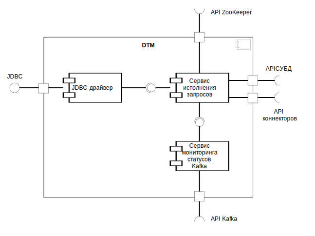

Компоненты системы
Система состоит из следующих компонентов (см. рисунок ниже):
- JDBC-драйвер — размещается на стороне внешней информационной системы; предоставляет JDBC-интерфейс
подключения к DTM и взаимодействует с сервисом исполнения запросов по REST API;
- сервис исполнения запросов (DTM Core) — анализирует и исполняет SQL-запросы; предоставляет REST API
для JDBC-драйвера и взаимодействует с сервисом мониторинга статусов Kafka по REST API;
- сервис мониторинга статусов Kafka (DTM Status Monitor) — отслеживает состояние топиков брокера сообщений
Kafka; предоставляет REST API для сервиса исполнения запросов.
Версии используемых компонентов системы можно проверить с помощью запроса
CHECK_VERSIONS.
На рисунке ниже показана схема компонентов системы.

Компоненты системы